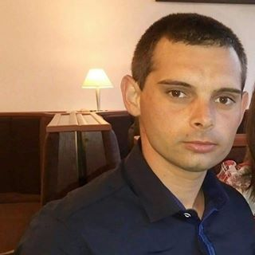

«Начините за борба с болките в ставите предизвикаха само недоумение». Известен японски ревматолог даде открито интервю на изданието ни
Д-р Йошинори Осуми (Yoshinori Ohsumi) е професор в Токийския медицински университет, носител на Нобелова награда по медицина. Получава Нобелова награда за откриването на механизма на автофагията - лечение и подмладяване на организма на клетъчно ниво.
Миналата година Йошинори Осуми дойде в Европа, за да изучи опита на своите колеги. Това, което той видя в Европа, според думите му, просто не може да се обясни. В европейските държави, според д-р Осуми, просто няма никаква медицина….
След скандалните изказвания в Япония, д-р Осуми се съгласи да даде интервю на изданието ни. Какво не му хареса на известния лекар в в ревматологията ни? И защо твърди, че в Европа е НЕВЪЗМОЖНО ДА СЕ ОТЪРВЕМ ОТ СТАВНИТЕ ЗАБОЛЯВАНИЯ по принцип?
- Говорейки пред японски журналисти, Вие казахте, че това, което видяхте в Европа, Ви шокира. Можете ли да коментирате това?
- Искам веднага да кажа, че имам добро отношение към Европа, към европейската култура и гражданите й. Но това, в какво състояние е вашата медицина, наистина шокира нашите лекари. Медицината Ви изостава поне с 20, а може би и с 30 години. Във всеки случай, в областта на ревматологията.
Основните начини за лечение на ставите са KYTTA-SALBE, ARTHROVITAN и други подобни лекарства
Въпреки това, всеки японски лекар знае, че тези лекарства НЕ ЛЕКУВАТ СТАВНИТЕ ЗАБОЛЯВАНИЯ! Те не са способни на това! Всичко, което могат, е да облекчат болката за известно време. Това означава, че болката и подуването преминават, човек се радва на възстановяването си, но в действителност няма кардинални промени в ставата. Тя остава толкова разрушена, колкото е била. Следователно, след известно време отново започва да боли. Какво правят лекарите в този случай? Те казват, че болестта е хронична и не може да се излекува напълно.
В Япония сега няма такива понятия като ХРОНИЧНА АРТРОЗА или ХРОНИЧЕН АРТРИТ. Защо? Защото и артрозата, и артритът, както и всички други ставни заболявания, могат да бъдат лекувани успешно.
Защо лекарите правят това? Според мен, цялата работа е в самата система на медицината. Факт е, че никой – нито лекаря, още по-малко аптечните мрежи – нямат интерес от това, човекът да бъде напълно здрав. Напротив, на тях им е изгодно хората да ги търсят отново и отново. Но това, което най-много ме изненада, беше, че по телевизията непрекъснато се говори за предполагаемата съществуваща аптечна мафия, че тя е окупирала всичко. И при това никой не й прави нищо. На никой не му пука!
Вашите лекари и фармацевти изтеглят последните пари от пенсионерите и това се смята за нормално.
- А какво бихте ни казали за лечението на болните стави в Япония?
- По-голямата част от ставните заболявания се лекуват успешно. Японските учени отдавна са разбрали, че не е необходимо да се премахват последиците от патологията (болката, слабата подвижност, възпалението и т.н.), а причините. Да се премахне това, което разрушава ставите. А те се разрушават поради лошото кръвообращение, което настъпва при ВСИЧКИ по-възрастни хора.
Вижте, ще се опитам да обясня по-просто. Кръвоснабдяването на ставата започва с големите артериални стволове, които са разположени близо до нея. Потокът от кръв, преминаващ през съдовите им разклонения, насища периартикуларните тъкани. Съдовите разклонения са малки капиляри. С възрастта те се запушват с холестерол и кръвта спира да преминава през тях. В резултат на това се влошават доставката на хранителни вещества в ставата и отстраняването на ненужните вещества от ставите.
 Пример за кръвоснабдяване на колянната става
Пример за кръвоснабдяване на колянната става
В резултат на това състоянието на хрущяла се влошава, започва патологичен процес на изсъхване и ставата губи еластичността си. Какво става след това? А по-нататък става така, че луменът на ставното пространство се стеснява, костите започват да се допират и причиняват триене. От това се появяват хрускането и схващането.
Тъй като преработените вещества спират да се извеждат от ставата, тя буквално се замърсява, образуват се костни израстъци — остеофити. Бързото им разрастване води до притискане на кръвоносните съдове и нервните окончания, което води до възпаление и болка.
Всички ставни заболявания – независимо от вида и етимологията си, имат една причина – това е нарушение на кръвообращението. Сега помислете какво трябва да се направи, за да се възстанови ставата? Правилно! Трябва да се възстановии кръвообращението.
За щастие, клетките на хрущялната тъкан имат способността да се регенерират. Това означава, че ако се създадат подходящи условия (нормализиране на кръвообращението), ставата може да се възстанови напълно. Човек няма болки и възпаления. Ставата става толкова подвижна, като на млади години. ЗАВИНАГИ! На човека вече няма да му се налага да пие обезболяващи хапчета и да се маже с мехлеми. Няма нужда да се страхувате, че излишното небрежно движение ще доведе до страшна болка. Хората стават напълно здрави.
- Как може да възстановим кръвообращението в ставите?
- Днес има много добри лекарства, които възстановяват кръвообращението в ставите. Една от важните активни съставки на такива лекарства е маслото от черен дроб на акула. Даденото вещество може да проникне в молекулите на холестерола и да ги унищожи отвътре. В резултат на това дори малките капиляри се отпушват.
Например, много добро седство за подобряване на кръвообращението и възстановяване на ставите са капсулите . Това средство съдържа всички най-необходими полезни вещества, които намаляват отоците в ставите и повредените тъкани, потискат възпалителните процеси и облекчават подвижността на ставите.
Както виждате, има комплексно въздействие.
- Това лекарство не се ли продава в аптеките?
- Работата е там, че го няма. Лекарите предпочитат да печелят пари от пенсионерите и болните хора, вместо да им помагат. Освен това няма съмнение, че ревматолозите или поне тези, които се интересуват от прогресивните методи на лечение знаят за лечебните свойства на чернодробното масло от акула и благоприятното му въздействие върху ставите.
Доколкото знам, производителят на искаше да влезе на фармацевтичния пазар. Но не му разрешиха, като измислиха стотици пречки (бюрокрацията не може да се изкорени). Това е разбираемо, защото ако това лекарство се появи в аптеките, фармацевтична мафия ще понесе огромни загуби. В края на краищата, фармакологията днес това е един голям бизнес! Дори в Япония. Но ако в Япония този бизнес е честен (и е насочен да излекува хората), то в Европа не!
- Какво бихте препоръчали на хората със ставни заболявания, живеещи в Европа?
- Обикновените хора, особено хората над 50 годишна възраст, страдат най-много от изостаналата медицина. Но за щастие има изход. Заедно с колегите от Япония направихме сайт, където лесно можете да си купите . Той е евтин, достъпен и лесен за употреба
Сега ще Ви разкажа, какво трябва да направите, за да получите :
Трябва:
- Преминете към официалния сайт на капсулите и оставете заявка.
- След известно време с Вас ще се свърже лекар-консултант, за да отговори на всичките Ви въпроси. Трябва да му кажете адреса за доставка;
- След 5-7 дни ще трябва да отидете на пощата и да получите пратката.
Официалният сайт разпространява от 3 месеца. Тази възможност вече са използвали няколко хиляди души. Молим всеки, който е получил лекарството, да попълни анкетата - до колко добре то му е помогнало. За сега в проучването са взели участие над 3000 души.
Резултати от проучването:
- Ставите спряха да болят, изчезна хрускането и неподвижността – при 98% от анкетираните
- Премахва възпалението, включително вътре в ставата – при 97% от анкетираните
- Изчезнаха болките при промяна на времето – при 94% от анкетираните
- Значително подобряване на функционирането на ставата като цяло – при 99% от анкетираните
- Колко дълго ще се продават капсулите ?
- Докато не свърши отредената партия. Но искам веднага да Ви предупредя, че са останали съвсем малко опаковки . В последно време все повече и повече го поръчват. Сигурно, хората вече са научили за неговата висока ефективност в сравнение с обикновените лекарства със малък ефект.
Докато не са свършили отпуснатите опаковки , препоръчвам на всеки, който има болки в ставите, да остави заявка за получаването му на официалния сайт
Kate
Благодаря! Интересна статия! Излишно е да говорим, че медицината ни е изостанала. Поръчах си !
 Gianni Solito
Gianni Solito
Аз съм един от тези, които вече успяха да опитат . Той наистина е най-добрият. Страдам от болки в ставите от няколко години. Раменете и колената, постоянно ме боляха. Сега не ме болят изобщо. Минах само един курс.
Sebastian Falckenberg
На 63 години съм. Ставите ми бяха почти напълно унищожени от артрозата. Ходих с бастун Болката беше ужасна, особено през нощта. Вече не се надявах, че някога ще мога да се отърва от болката. Сега дори мога да тичам! И то на моята възраст! Миналата година минахме курс на лечение с заедно със съпругата си. Дъщеря ни го донесе, когато беше на почивка в чужбина.
 Ann Jakobis
Ann Jakobis
Съгласна съм с лекаря!! Медицината ни винаги е била не много добра. Всички искат пари и никой няма съвест. Зарекох се вече да не ходя по лекари – така или иначе няма никакъв смисъл. Благодаря на хората, които помагат на обикновените хора толкова много…
Sam
С помощта на се отървах от остеохондрозата си. Поръчах си го на сайта преди 2 месеца на промоция.
Sophia Schmitge
Оставих заявка. Обещаха ми, че след няколко дни ще мога да го получа. Чакам с нетърпение.
 Ben Mantke
Ben Mantke
Това наистина е страхотно нещо! Още преди седмица така ме боляха ставите, че не знаех къде да се дена. Днес изобщо не ме болят. От една седмица използвам . Браво на японските учени!
 Carolina Jose
Carolina Jose
На 61 години съм. Минах курс с . Повече от година преди това ужасно ме боляха ставите, буквално се усукваха. Костите ме боляха: лактите, коленете и всички кости от коленете до глезените. Ходих по лекари, казаха че съм напълно здрава. Плюс през цялото време ми хрусках прешлените и костите над таза. Всичко това е мина, когато започнах да се мажа с . Препоръча ми го една приятелка. Тя също се беше спасила с него!
 Francesca Donny
Francesca Donny
И двамата с мъжа ми сме пенсионери. И двамата имаме болки в ставите. Скъпите лечения не са ни по джоба и затова като научих за , веднага си го поръчахме. Изолзваме го от три седмици. Дори лекарят ми каза, че състоянието на ставите ми е значително по-добро.
 Aurora Esgo
Aurora Esgo
На 51 години съм, от тях 26 години ме измъчат болки в гърба – остеохондроза в кръста. С какво само не се лекувах – всичко без резултат! През есента на 2010 година "ми излезе" херния на гръбначния стълб, неврохирурзите настоява за операция - отказах се, живях на болкоуспокояващи и противовъзпалителни таблетки и инжекции – без никакъв резултат. От тези лекарства започназа да ме болят тазобедрените стави изобщо не можех да ходя. Ревматологът ми препоръчва да взимам хондропротектори постоянно. Но те също почти не помагаха. В началото на миналата година чрез познати от Япония получих . В крайна сметка, след 1 лечебен курс ВСИЧКИ стави станаха напълно здрави. Горещо препоръчвам всички да си поръчат това лекарство и веднага да вземат целия курс. Купих си го на пълна цена, тогава беше много скъпо. Сега си поръчах още един курс за всеки случай. Тази цена е почти три пъти по-евтина от тази, която платих тогава, така че защо не
 Michael Marciani
Michael Marciani
Вчера получих поръчката. До последно си мислех, че е измама. Но лекарството е в ръцете ми и го взех буквално без пари.
 Rodica Anisoaro
На мен също ми помогна да се отърва от изоставения артрит и подаграта! Много добро средство.
 Viorel Pacuraru
Viorel Pacuraru
Съседът ми на вилата често се оплакваше от болки в ставите. Но през последния месец го виждам активен и весел. Каза ми, че използвал . Той е на 72 години.
Cornelia Braileanu
Успях да поръчам. Докато все още имаше.
Adriana Matei
Благодаря!
Коментари